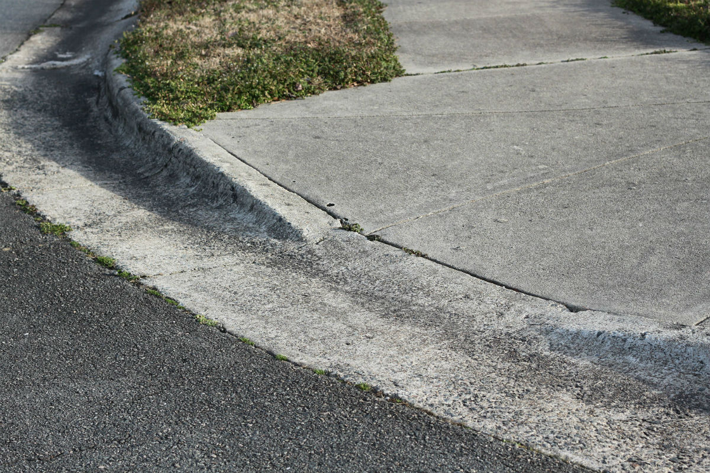
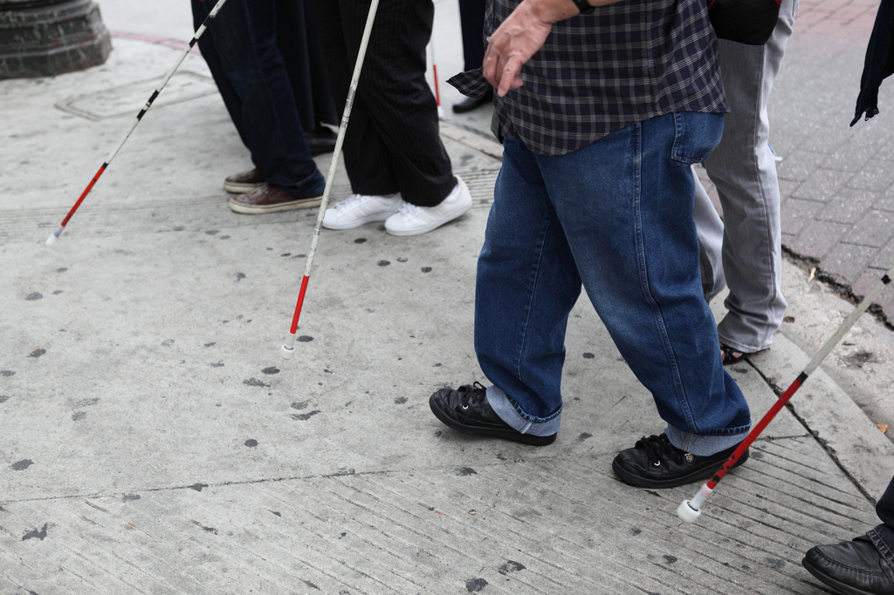
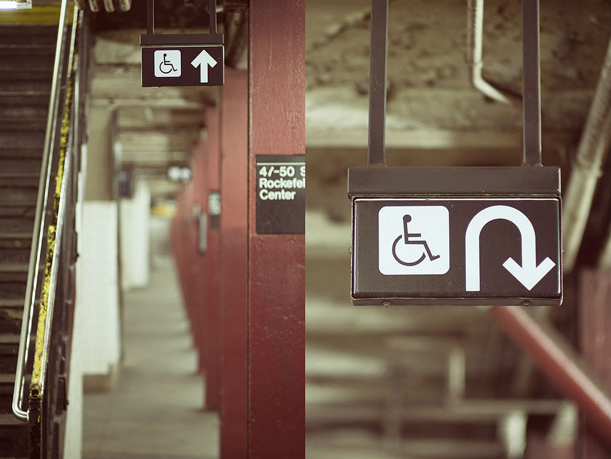
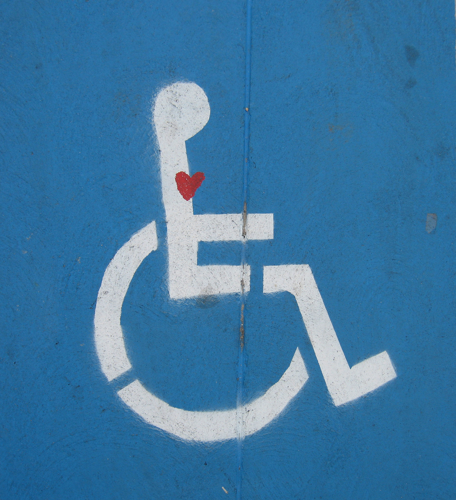

- Welcome and Introductions
- What is Accessibility?
- Benefits of Accessibility
- Types of Disability
- Accessibility is a continuum, not a checkbox
- Working with Screen readers
- Other visual disabilities
- Hearing disabilities
- Physical disabilities
- Cognitive disabilities
- Conclusion
Intro to Web Accessibility
Welcome!
Girl Develop It is here to provide affordable and accessible programs to learn software through mentorship and hands-on instruction.
Some "rules"
- We are here for you!
- Every question is important
- Help each other
- Have fun
Introductions
Tell us about yourself.
- Who are you?
- What do you hope to get out of the class?
- What is your favorite 80's song?
Who can use your sites?
Photo credit: bob the lomond opens in a new window cc opens in a new window
What is accessibility?
- Accessibility is about making your sites useful to as many people as possible.
- Accessibility is about overcoming barriers.
- Accessibility is about helping your users.
Why worry?
Photo credit: e-magic opens in a new window cc opens in a new window
Photo credit: circulating opens in a new window cc opens in a new window
Why make your sites accessible?
- Expand your potential audience! 54 million people in the US have a disability, 1.8 million are unable to see printed words, and 16.1 million have a cognitive or mental illness that impedes daily functioning (source opens in a new window).
- Be in compliance with legal guidelines, like Section 504 and 508 compliance.
- Avoid potential lawsuits opens in a new window.
- Do the right thing.
Accessibility is for everyone!
Photo credit: Sylvia Richardson cc opens in a new window
Benefits of Accessibility
- Curb cuts were designed for wheelchairs, but others use them. Similarly, accessibility features end up helping everyone.
- Many times, good design practices create accessibility as a side effect.
- Accessibility features, like good alt text, can improve your search engine placement.
What are barriers to access?
Photo credit: sciencesque opens in a new window cc opens in a new window
Types of Disability
- Visual disabilities: blind or low-sight, color blind
- Hearing disabilities: deaf or hard-of-hearing
- Physical disabilities: MS, paraplegic/quadriplegic, epilepsy
- Cognitive disabilities: dyslexia, low literacy, learning disabilities
Accessibility is a continuum, not a checkbox
Photo credit: Matt Carman opens in a new window cc opens in a new window
Visual disabilities
Photo credit: Braille Institute opens in a new window cc opens in a new window
Let's try it
Screenreader simulation opens in a new window
http://bit.ly/p3JmJ2
Provide an alternate path
Photo credit: Linh H. Nguyen opens in a new window cc opens in a new window
Alt text
- Alternate text describes pictorial content in words.
- Pay attention to context.
- Describe the function, not the content.
- If an image is purely decorative, use "" to instruct a screen reader to skip it.
- Instead of using "longdesc," provide a caption or link.
<img src="location" alt="brief description">
Other tips for screen readers
- Tables can be hard to navigate, especially if you use merged cells.
- If you are going to use image maps, make them client-side maps, with alt text on each link. (More on image maps opens in a new window.)
- Yes, you still have to use skipnav links.
- Many users are switching to touch-screen based readers like VoiceOver opens in a new window.
Use color wisely
Photo credit: guzzphoto opens in a new window cc opens in a new window
Provide contrast
Photo credit: antifluor opens in a new window cc opens in a new window
Be flexible
Photo credit: dollen opens in a new window cc opens in a new window
Other visual disabilities
- If you use color to indicate something, also use another indicator. For example, underline links on hover or mark a required field with an asterisk.
- Red/green color blindness is the most common, so avoid green on red.
- Have a minimum of contrast ratio of 4.5:1 for normal text and 3:1 for large text. (Checker opens in a new window)
- Try zooming in on your designs, to see how they look when enlarged. It is a good idea to use ems and percentages instead of pixels when you can.
Provide good captions

Credit: Randall Munroe opens in a new window cc opens in a new window
Dealing with Hearing Disabilities
- Most deaf or hard-of-hearing people have limited difficulty with web accessibility.
- Provide captions or transcripts for multimedia elements.
- Don't rely on sounds to convey information, like an "alert" noise. Even hearing users often have their computers muted.
- Be especially careful if your site targets older users, as hearing loss is common.
Mice are Scary
Photo credit: Stéfan opens in a new window cc opens in a new window
Dealing with Physical Disabilities
- Many users with limited mobility interact with the screen via keyboard.
- Other users use a mouse, but have trouble with fine motor control.
- Make clickable elements large, and put space between them.
- Avoid clickable page elements that move.
- Animations with rapid flickers are not only annoying, they can trigger epileptic seizures.
- These guidelines also help children and touchscreen users!
Don't overwhelm

Photo credit: Thomas Hawk opens in a new window cc opens in a new window
Provide plenty of time

Photo credit: Bethan opens in a new window cc opens in a new window
CAPTCHAs don't just catch robots

Photo credit: baboon opens in a new window cc opens in a new window
Dealing with cognitive disabilities
- Unfortunately, there is not a lot of research in this area.
- Minimize cognitive load--don't overwhelm the user.
- Use common icons to mark important tasks.
- If you have timed content (forms, image galleries, etc.) allow users to control extend time.
- CAPTCHAs aren't blind-friendly, are very difficult for users with learning disabilities like dyslexia, and annoy everyone. Consider an alternative method opens in a new window.
Show your users some love!
Photo credit: Sam Felder opens in a new window cc opens in a new window
Resources
- WAVE toolbar opens in a new window, a firefox extension that does in-browser checks.
- NonVisual Desktop Access (NVDA) opens in a new window,a free and open source screen reader for Windows.
- W3C Web Accessibility Initiative (WAI) opens in a new window.
- WebAIM opens in a new window, an accessibility-focused organization with great information.